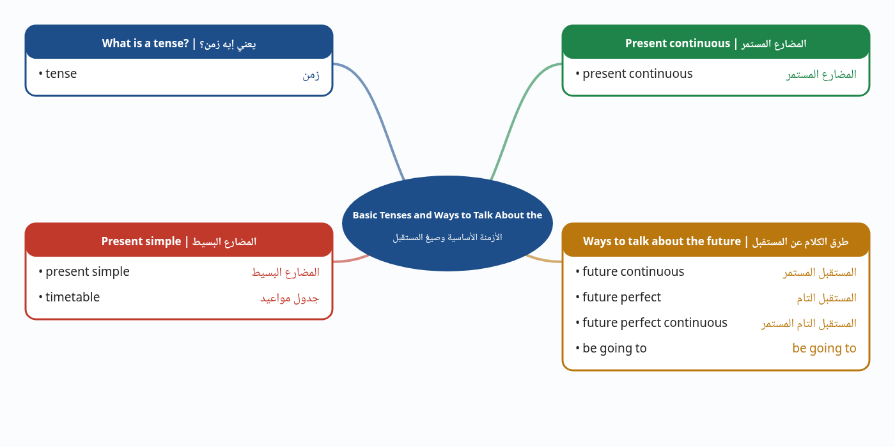

🎓
كورس TEFL العملي ٦: الأزمنة الأساسية وصيغ المستقبل
📄 حمّل PDF الدرس 📝 ملخص الدرس (عربي) PDF 📝 Lesson Summary (English) PDF 🧠 الخريطة الذهنية PDF🧠 شوف الخريطة الذهنية للدرس

📎 ملحقات
كتب
- English Grammar in Use (Raymond Murphy)
- Practical English Usage (Michael Swan)